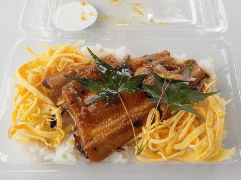

島根県大田市三瓶町志学ロ1730-11
更新日 : 2026/09/27

一度お店に食べに行きたいと思っていましたが、ごいせ仁摩のイベントで販売していたので簡単に買えて食べれて良かったです。
でも実際にお店に行きたかったかな。
アナゴはタレにしっかりと浸かっていて濃い味でした。アナゴらしい味と食感のお寿司でした。
1000円で購入しました。大田名物が食べれて良かった。
【おいしいものを食べよう。】【たくさん寝よう。】
【ソロ活をしよう!】【季節感のあることをしよう。】【動画視聴はほどほどに。】【当サイトの全てのコンテンツは無断転載禁止です。】